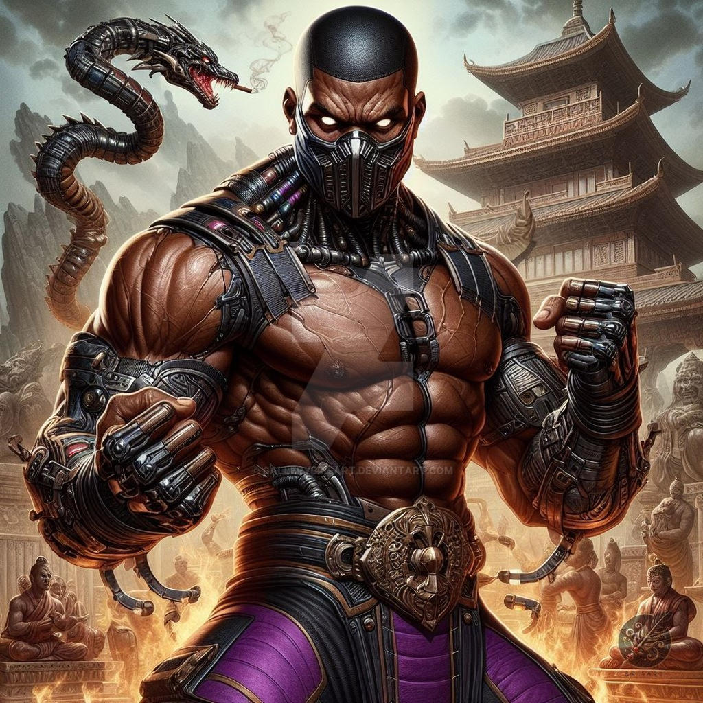
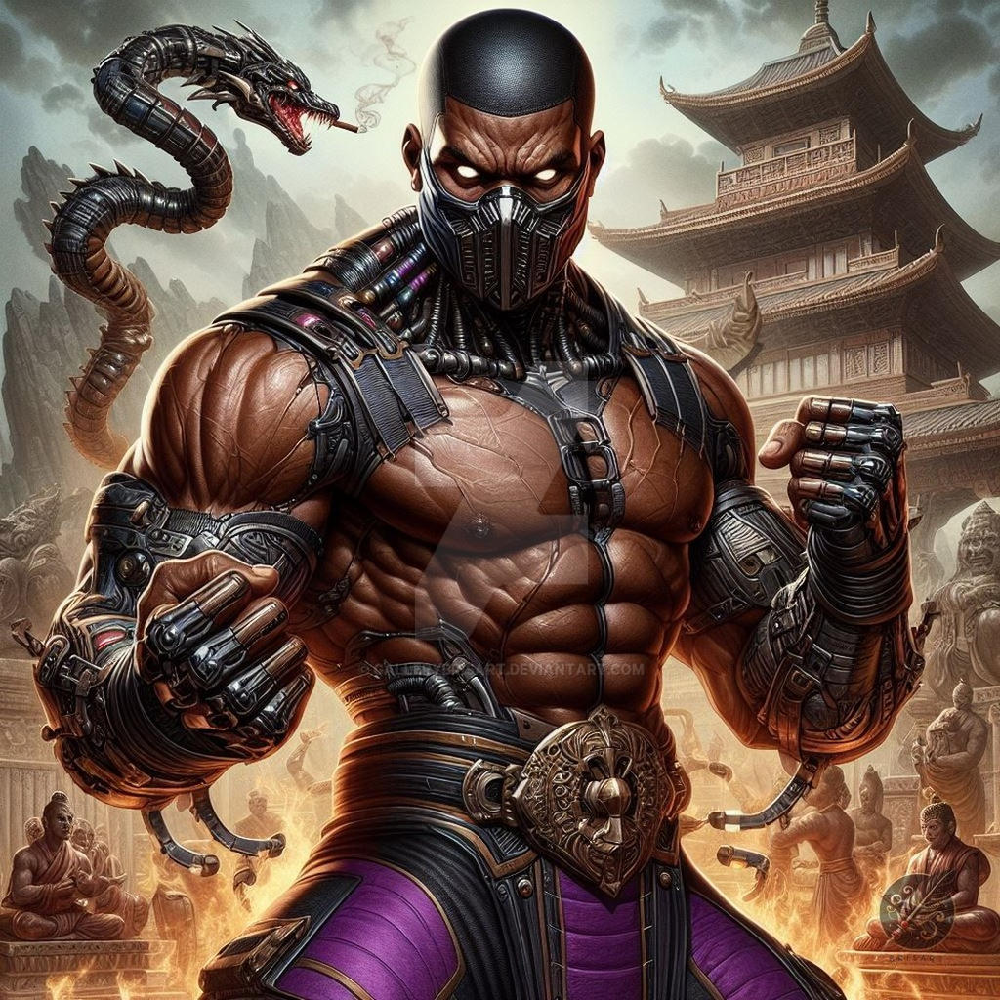
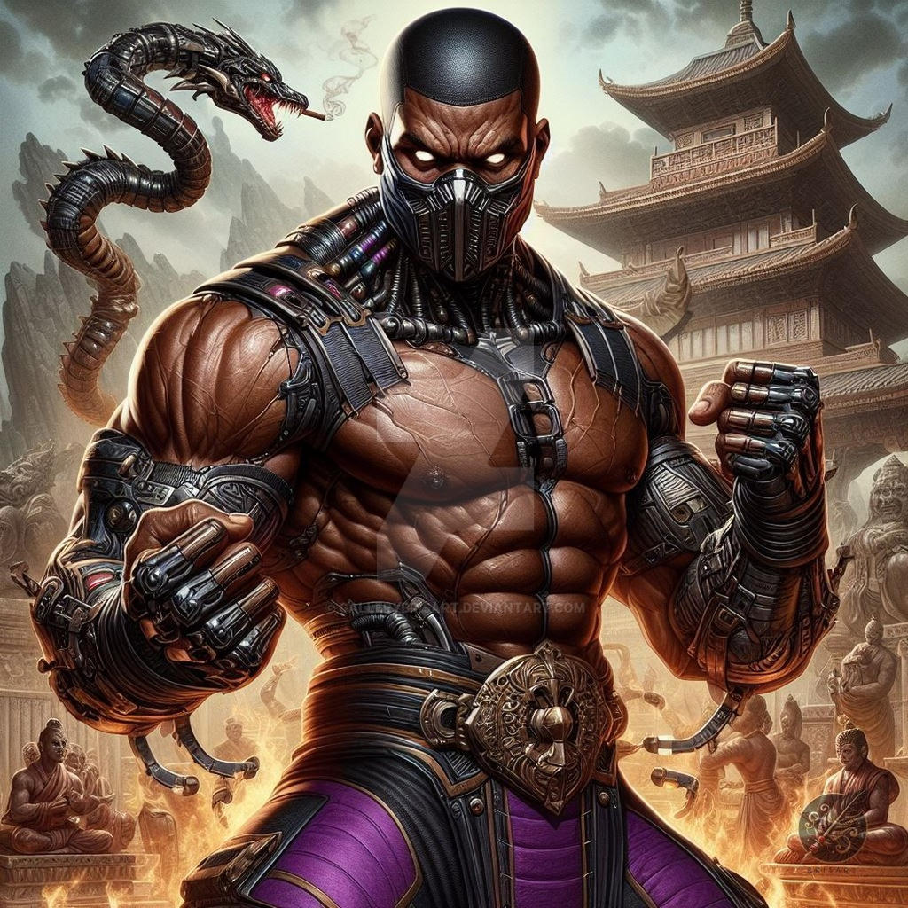

JAX - Mortal Kombat

Nombre: Jackson "Jax" Briggs
Afiliación: Fuerzas Especiales de los Estados Unidos
Habilidades: Jax posee una increíble fuerza debido a sus brazos cibernéticos. Es un combatiente excepcional en el combate cuerpo a cuerpo y tiene una variedad de movimientos poderosos, incluyendo golpes de impacto y ataques de agarre.
Apariciones: Jax hizo su primera aparición en Mortal Kombat II y ha sido un personaje recurrente en la serie. Es uno de los personajes más icónicos y respetados del universo Mortal Kombat.
Jax hizo su debut en Mortal Kombat II. Se presenta como un héroe arquetípico afroamericano. En la cadena de mando de las Fuerzas Especiales, es el superior directo de Sonya Blade y la fuerza que cataliza la impulsividad de Sonya. Jax es claro, cuidadoso y siempre está vigilando lo que hacen sus hombres. Cuando surge la necesidad, se convierte en una bestia en el campo de batalla con la actitud y ferocidad de un león. Hace uso sin escrúpulos de la tecnología más avanzada a su disposición para mejorarse a sí mismo y a su unidad. Fue responsable de la desfiguración del criminal Kano, obligándolo a usar una placa metálica en una parte de su rostro.
En la línea de tiempo alternativa, Jax murió a manos de Sindel y fue revivido como un revenant por Quan Chi, a quien se vio obligado a servir. Aunque finalmente fue liberado y devuelto a la vida, sus experiencias como revenant lo dejaron traumatizado, reduciendo al feroz guerrero a una sombra rota de su antiguo ser. Algún tiempo después, se casó con una mujer llamada Vera, con quien tuvo una hija, Jacqui. Jax se opuso a la idea de que ella se uniera a las Fuerzas Especiales, pues no quería que experimentara los mismos horrores y traumas que él. En Mortal Kombat 11, se revela que su esposa había muerto, lo que quebró aún más a Jax y lo llevó a convertirse en un ermitaño. Esto dio a Kronika la oportunidad de reclutarlo para su objetivo de restaurar la línea de tiempo, prometiéndole la capacidad de evitar que Jacqui se uniera a las Fuerzas Especiales. Aunque inicialmente trabajó junto a Kronika, fue convencido de regresar al lado del bien por su yo del pasado, su hija y Raiden, volviéndose contra su aliada y uniéndose a la lucha contra ella.
En la Nueva Era, Jax comienza como un agente del FBI que cofundó la Agencia de Investigación del Mundo Exterior junto al ex-Yakuza Kenshi Takahashi, después de ayudarlo a luchar contra los gánsteres en la misma noche en que Kenshi conoció por primera vez a Shang Tsung.
Jax es un soldado hábil y fuerte, conocido por su increíble fuerza física. Puede aplastar cabezas humanas con una facilidad extrema y causar temblores en el suelo con un solo golpe. Su fuerza es suficiente para crear ondas de choque púrpuras y lanzarlas contra los enemigos. Desde Mortal Kombat 3, Jax utiliza mejoras cibernéticas que aumentan aún más su fuerza, incluyendo misiles portátiles, potenciadores de energía, metalmorfosis nanocinética y un mecanismo de pistón para aumentar la fuerza de sus golpes.
En los juegos posteriores, estos cibernéticos recibieron nuevas mejoras, como golpes propulsados por cohetes y disparos de proyectiles de plasma. Jax también incorpora armamento moderno en su estilo de combate, como ametralladoras, granadas, lanzacohetes y RPGs, además de sus habilidades de combate cuerpo a cuerpo. En Mortal Kombat 11, sus brazos cibernéticos pueden calentarse tras cada golpe, aumentando el daño y permitiendo el lanzamiento de proyectiles.
Además de sus habilidades de combate, Jax es un técnico, científico e ingeniero competente. Fue responsable del desarrollo de la tecnología de portales utilizada por la Agencia de Investigación del Mundo Exterior y del programa de mejora cibernética del SF, además de restaurar la voluntad propia de Cyrax tras su deserción de Lin Kuei.

El personaje Jax, de Mortal Kombat, es conocido por su apariencia distintiva y sus atuendos de combate, que han pasado por varias transformaciones a lo largo de la franquicia. Aquí están los principales trajes y estilos de ropa de Jax, enfocándonos en las versiones más conocidas:
Traje Clásico (Mortal Kombat 2 - 1993):
Color predominante: Azul.
Ropa: Jax usa una camiseta sin mangas azul, con un emblema en el pecho, que muestra un estilo militar. También tiene pantalones anchos de combate y botas, además de guantes que cubren sus antebrazos y manos.
Características adicionales: Una especie de bandana o cinta en la cabeza en algunas versiones.
Accesorios: Guantes de combate, con énfasis en sus "brazos cibernéticos" que, más tarde, se convertirían en una parte importante de su apariencia.
Versión Moderna (Mortal Kombat 9 - 2011):
Color predominante: Azul y plata.
Ropa: Jax pasa a usar una camiseta de combate, combinada con pantalones tácticos y botas robustas. Su apariencia ahora es más militar y centrada en un aspecto más práctico y realista.
Brazos cibernéticos: Jax adquiere brazos cibernéticos como parte de su historia, que son bastante imponentes y refuerzan su apariencia de fuerza bruta.
Mortal Kombat X (2015):
Color predominante: Negro y dorado.
Ropa: Jax se viste con un estilo militar aún más futurista, usando un chaleco táctico negro, pantalones con detalles dorados y botas. También posee sus brazos cibernéticos, más desarrollados, que tienen un diseño más moderno y futurista.
Características adicionales: Una bandana negra o gris atada en la cabeza, además de hombreras que le dan un aspecto más imponente.
Mortal Kombat 11 (2019):
Color predominante: Negro, plata y detalles en rojo.
Ropa: Jax se presenta con un traje militar más técnico, aún con chaleco y pantalones tácticos. Sus brazos cibernéticos tienen un diseño más estilizado, con detalles en plata y elementos modernos.
Características adicionales: También usa una bandana y, en algunas variaciones, una armadura más reforzada en los hombros.
Usa la fórmula F = m × a para calcular la fuerza de los golpes de Jax!
Solo informa la masa del objeto (en kg) y la aceleración (en m/s²) del golpe.